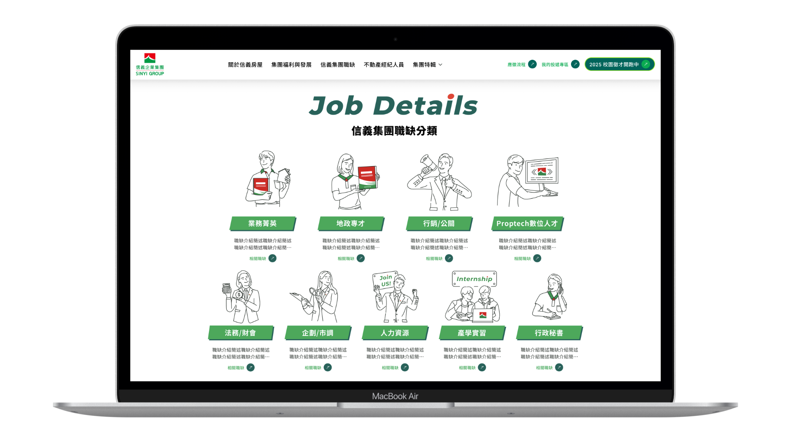
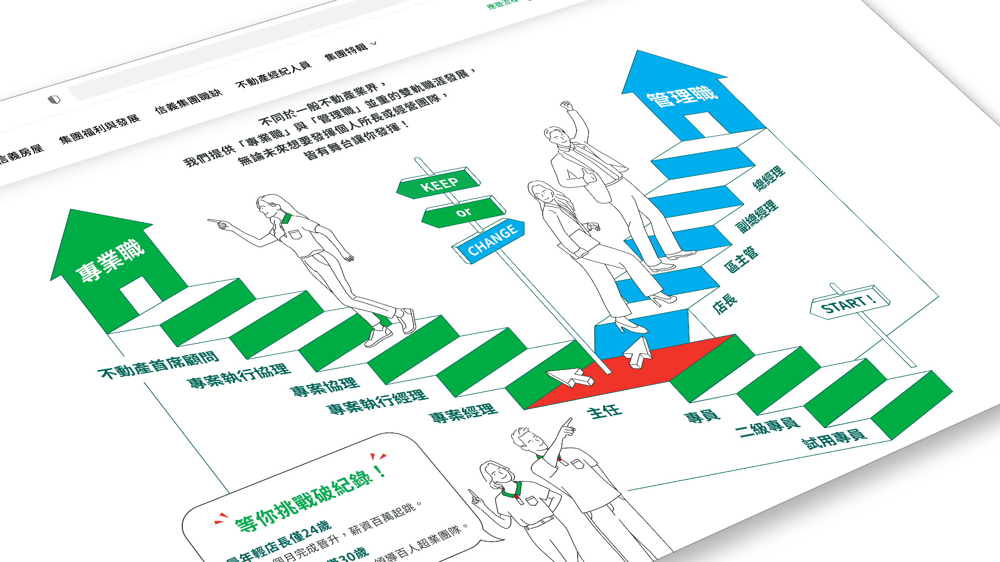
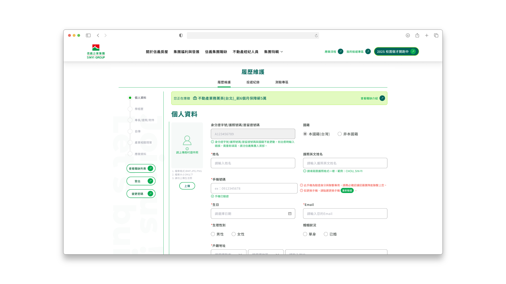
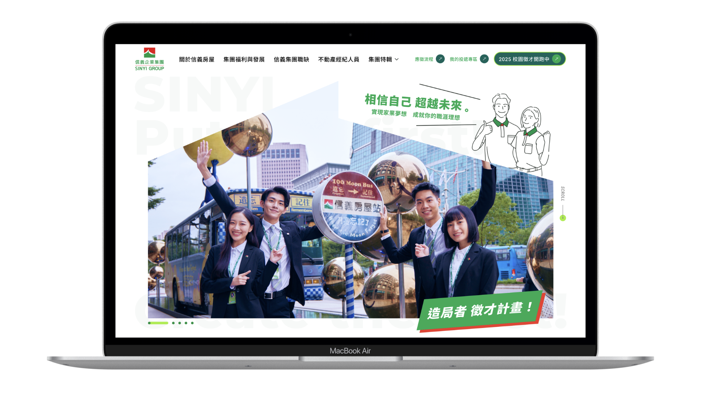
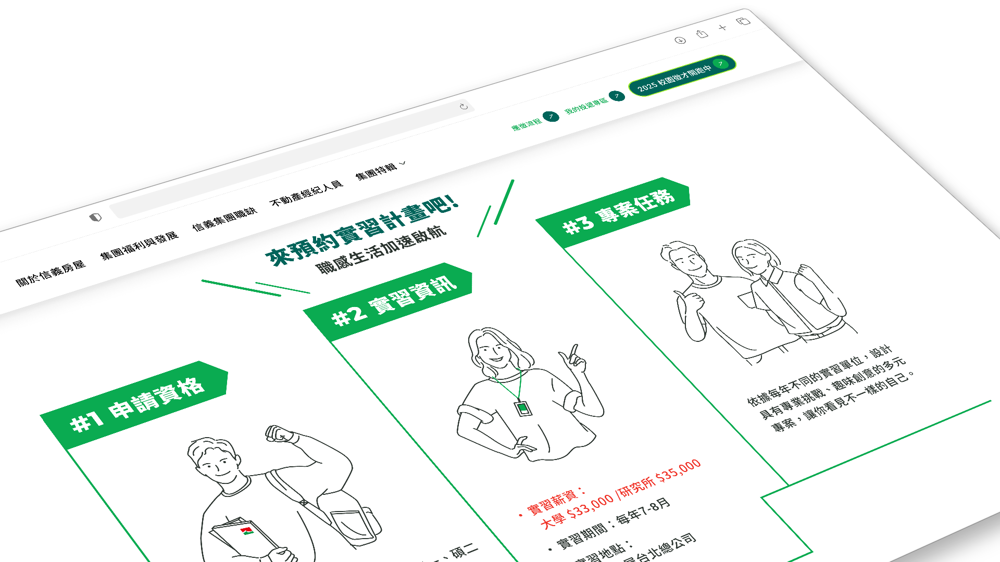
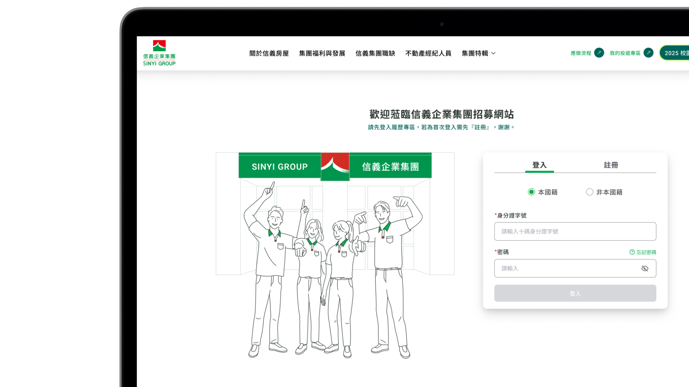

房仲求職前台
網站改版
為不動產龍頭重建數位招募門戶，整合 RWD 品牌前台與複合式線上履歷投遞系統的端對端體驗設計。

台灣不動產市場的龍頭企業正面臨品牌老化的現實挑戰——傳統招募管道難以觸及 Z 世代與 PropTech 人才，應徵率逐年下滑。這次改版雙軌並進：重塑招募品牌的數位門戶形象，同時優化深度綁定舊後台系統的履歷投遞流程，目標是讓每位求職者從初次接觸到完成申請，都能有符合品牌期待的完整體驗。
跨部門阻力
與系統限制的
雙重考驗。
組織多方意見分歧
人資、業務、數位轉型三大部門對品牌調性各有主張——設計意見分散、優先序衝突，共識難以凝聚。在缺乏統一決策機制的情況下，設計師必須同時扮演翻譯者與協調者的角色。
Legacy 系統的工程限制
招募流程深度綁定既有的 Legacy 後台，資料庫 Schema 無法更動。大量必填欄位無法刪減、關聯邏輯複雜——舊版跳出率居高不下，但後端完全不是改動的選項。
受眾斷層與認知疲勞
舊版資訊密度過高、缺乏視覺引導，與 Z 世代的閱讀習慣完全脫節。求職者看不到清晰的職涯路徑，更難產生留下來、填完表單的動力。
關鍵決策與思考。

模組化職缺矩陣與扁平年輕化視覺定位
首頁的職缺類別原本繁雜分散。我將其重新歸納為「九大職缺矩陣」，放棄沉重的表格，改用扁平線條插畫搭配大膽的綠色漸層——在品牌調性上注入 PropTech 的科技感，讓年輕求職者能在五秒內找到屬於自己的方向。

職涯地圖的「視覺化故事線」
面對業務實習生與經紀人專頁的冗長福利說明，我以「三階段時間軸」與「階梯式職涯圖」取代純文字敘述，將保障薪資時程、轉正職路徑等關鍵資訊轉化為直覺的視覺語言。清晰的層次引導不只讓頁面更易讀，也自然拉高了 CTA 的點擊率。

雙軌導航「漸進式表單」
本專案技術難度最高的環節。後台欄位龐大且無法刪減，我設計了「左側垂直步驟清單 + 底部水平進度條」雙軌視覺引導，將填寫任務拆解為 5 個微任務，輔以 Inline Validation 與情境 Tooltip——在完全不動後台架構的前提下，大幅降低使用者填寫的焦慮感與中途放棄率。
核心畫面。
A — 招募導流與品牌門戶

數位招募首頁。實景攝影與幾何色塊相結合，建立品牌第一印象，透過模組化卡片精準分流不同受眾。

培育計畫頁。降噪後的白底版面以對比綠色突顯「階段培育」與「學長姊證言」等關鍵決策資訊。
B — 核心智慧履歷系統

履歷系統優化。嚴謹的網格控制輸入框間距，以預警式紅色提示引導使用者完成填寫，大幅降低表單焦慮。
我學到
了什麼。
面對大型企業錯綜複雜的利害關係人，「美感」從來不是推動變革的語言。在這個專案裡，我扮演了設計轉譯者的角色——把抽象的 UX 易用性原則，翻譯成對方窗口聽得懂的「Before/After 動線對比」與 Figma 互動原型。這份翻譯的能力，最終幫助我們在時限內收攏多方意見、順利定案。
無法改動後台的限制，反而讓我更清楚地看見前端設計的邊界與可能性。五個微任務的拆解、雙軌進度條、Inline Validation——這些都不是創意，而是在限制下找到的最優解。我逐漸相信，真正的設計能力，往往在有約束時才最清晰地顯現。
事後回頭看，這個專案最難的不是任何單一的技術決策，而是讓 UI 細節背後的意圖被看見。舉例來說，「九大職缺矩陣」的分類邏輯，其實來自對求職者心理模型的判斷——但這個決策在會議上只有一行備註。後來我把這份邏輯整理成一頁視覺化說明，才真正讓業主和開發對那個元件「為什麼長這樣」有了共識。